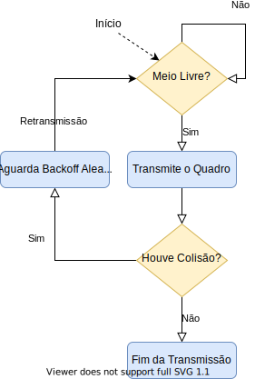

O CSMA (Carrier-Sense Multiple Access) é provavelmente o principal representante da família de protocolos de acesso aleatório atualmente. Esse protocolo é adotado por diversas tecnologias de comunicação modernas, incluindo o Ethernet e o Wi-Fi. No entanto, quando falamos em CSMA, estamos na prática nos referindo a um conjunto de protocolos, já que existem hoje diversas variantes dele. Ethernet e Wi-Fi, por exemplo, utilizam versões com diferenças consideráveis. Todas essas variantes, entretanto, compartilham uma mesma estratégia geral e uma série de componentes.
A ideia básica do CSMA é evitar que transmissores atrapalhem transmissões já em andamento — algo que ocorre, por exemplo, no ALOHA Puro. Para isso, toda vertente do CSMA realiza uma operação fundamental chamada de detecção de portadora. Em termos mais simples, isso significa que, antes de iniciar a transmissão de um quadro, o transmissor ouve o meio. Se o transmissor percebe que o meio já está em uso, ele adia sua própria transmissão. A principal diferença entre as várias vertentes do CSMA se concentra justamente em como esse adiamento é realizado.
Nesse material, estudaremos três vertentes do CSMA: o CSMA Persistente, o CSMA Não Persistente e o CSMA p-Persistente. O termo persistência, nesse contexto, se refere quão agressivamente o transmissor tenta iniciar sua transmissão. Em geral, tecnologias específicas implementam especializações de uma dessas três versões. Assim, uma boa compreensão do funcionamento e propriedade dessas três vertentes simplifica o entendimento das versões implementadas pelas tecnologias de comunicação.
Das três vertentes que estudaremos nesse material, o CSMA Persistente é o mais agressivo. Isso se reflete em duas situações:
Em qualquer que seja o caso, uma vez iniciada a transmissão, o transmissor precisa, de alguma forma, determinar se houve colisão. Nesse material, não entraremos no mérito de como isso é realizado — as variantes do CSMA usadas pelo Ethernet e pelo Wi-Fi diferem nesse ponto, por exemplo. Assumiremos apenas que o transmissor conseguirá determinar isso. Caso a transmissão não tenha sofrido colisão, o transmissor considera o processo terminado. Do contrário, o nó inicia um processo de backoff aleatório: ele sorteia um tempo pelo qual se absterá de tentar acessar o meio novamente. Ao final do período de backoff, o transmissor tenta realizar uma retransmissão do quadro, seguindo exatamente o mesmo procedimento da tentativa original.
Em resumo, o funcionamento do CSMA Persistente pode ser resumido no seguinte fluxograma:

Em relação à versão persistente, o CSMA Não Persistente difere pelo comportamento do transmissor ao encontrar o meio ocupado durante a detecção de portadora. Ao invés de continuar monitorando o meio até que esse se torne livre e, em seguida, transmitir imediatamente, no CSMA Não Persistente o transmissor entra em processo de backoff aleatório. Apenas após esse período de backoff, o transmissor volta a realizar a detecção de portadora e, se o meio estiver livre, realizar a transmissão.
Como um todo, o funcionamento do CSMA Não Persistente é ilustrado a seguir:
Contrastando o funcionamento das versões persistente e não persistente, percebe-se que a segunda é muito mais “cuidadosa” em relação ao acesso ao meio. Esse cuidado adicional tem como efeito reduzir a probabilidade de ocorrência de colisões. Isso porque, quando o meio se encontra ocupado, há uma tendência de acumulação de demanda: outros nós podem passar a querer transmitir. Quando isso ocorre no CSMA Persistente, esses vários transmissores passarão a aguardar o final da transmissão atual para começaram as suas. Isso gera em certo efeito de sincronização das tentativas de transmissão, o que contribui para a ocorrência de colisões.
Por outro lado, essa redução na probabilidade de colisão obtida no CSMA Não Persistente vem a um custo: a possibilidade de aumentar o ociosidade do canal. Considere, por exemplo, uma situação em que há uma transmissão em curso e apenas um outro nó deseja transmitir. Nesse caso, como não há competição, não há qualquer risco de colisão no CSMA Persistente. Por outro lado, o CSMA Não Persistente determina a execução de um backoff aleatório que pode exceder o tempo restante da transmissão em curso. Assim, no tempo entre o final da transmissão em curso e o final do período de backoff, o enlace ficará ocioso. Assim como as colisões, os períodos de ociosidade do enlace constituem desperdício de recursos e, em última análise, queda no desempenho.
O CSMA p-Persistente tem um comportamento intermediário às duas vertentes anteriores. Como todo CSMA, o p-Persistente inicia seu funcionamento ouvindo o meio de transmissão. Nesse ponto, se o meio se encontra ocupado, o p-Persistente age como a vertente persistente: continua ouvindo o meio até que esse se torne ocioso.
Em algum momento — seja inicialmente, seja depois de algum tempo — o transmissor deve encontrar o meio livre. Nesse momento, o funcionamento do CSMA p-Persistente passa a ser (potencialmente) diferente daquele da versão persistente. Enquanto na versão persistente, o transmissor sempre transmite imediatamente quando o meio se torna ocioso, no p-Persistente usa-se aleatoriedade para decidir quando transmitir. Em particular, o CSMA p-Persistente tem um parâmetro \(p\) — daí o nome do protocolo — que representa a probabilidade de iniciar a transmissão uma vez que o meio se torna livre. Quando o meio se torna ocioso inicialmente, o CSMA p-Persistente toma uma decisão aleatória de transmitir com probabilidade \(p\)1 — o que quer dizer que ele não transmitirá com probabilidade \(1-p\).
Se o nó decide não transmitir, ele aguarda um tempo padronizado denominado slot2. Ao final desse período, o nó volta a ouvir o meio. Se o meio continua livre, ele novamente toma a decisão aleatória de transmitir com probabilidade \(p\), e o ciclo se repete. Se, durante esse ciclo, em algum momento o nó percebe o meio ocupado, o nó realiza um backoff aleatório. Ao final desse backoff, o nó volta ao estado inicial de detecção de portadora.
Quando o nó finalmente consegue efetuar sua transmissão, ele verifica se houve colisão. Caso tenha havido, ele realiza um backoff aleatório e volta ao estado inicial de detecção de portadora.
O fluxograma abaixo sumariza esse algoritmo:
Repare que, nesse fluxograma, há dois contextos diferentes em que o nó realiza detecção de portadora. O primeiro contexto ocorre no início de uma tentativa de transmissão do pacote. Nesse caso, o comportamento do CSMA p-Persistente é o mesmo do CSMA Persistente. Depois que o meio se torna livre nesse primeiro momento, há um segundo uso da detecção de portadora que acontece na porção probabilística do algoritmo: enquanto a decisão probabilística de iniciar a transmissão não ocorre, o nó realiza uma nova detecção de portadora a cada slot.
Nesse segundo contexto, o comportamento do CSMA p-Persistente se aproxima daquele do CSMA Não Persistente. Isso porque, caso o meio se torne ocupado novamente, o nó migra para um estado de backoff aleatório — ao invés de aguardar que o meio fique ocioso novamente, como na vertente Persistente.
Ao analisar o CSMA p-Persistente, é importante entendermos o papel do parâmetro \(p\). Note que, se \(p = 1\), quando o processo inicial de detecção de portadora aponta o meio livre, o nó transmite imediatamente. Isso significa que, para \(p = 1\), o CSMA p-Persistente se comporta de maneira idêntica ao CSMA Persistente. Por esse motivo, o CSMA Persistente é muitas vezes chamado de CSMA 1-Persistente.
Por outro lado, à medida que reduzimos o valor de \(p\), o CSMA p-Persistente se torna menos agressivo. Mesmo depois que o meio se torna livre inicialmente, o nó pode abrir mão de tentar transmitir imediatamente a depender do valor sorteado (e do valor exato da probabilidade \(p\)). Essa característica mitiga o problema da sincronização de múltiplos transmissores quando o canal está ocupado, que pode levar a um excesso de colisões no CSMA Persistente.
Assim como no CSMA Não Persistente, esse maior cuidado no acesso ao meio pode resultar em aumento da ociosidade do canal. Entretanto, no CSMA p-Persistente essa agressividade é configurável através do parâmetro \(p\), algo que as duas outras versões não permitem.
Nesse material, estudamos como funcionam três vertentes do CSMA. É possível encontrar implementações práticas de cada uma dessas vertentes, geralmente com pequenas alterações em certos componentes — por exemplo, como o tempo de backoff é calculado e/ou contado, como se determina se houve ou não colisão. Além dessas implementações ligeiramente diferentes, existe ainda uma quarta estratégia de persistência chamada de CSMA O-persistente, que não abordaremos aqui. A existência e implementação prática de todas essas vertentes levanta a dúvida: por que há tantas variantes desse mesmo protocolo base?
Um dos motivos está no tradeoff entre colisões e ociosidade. Vertentes mais agressivas resultam em mais colisões em troca de menos ociosidade. Para certas tecnologias, o custo associado à ocorrência de uma colisão é mais alto que para outras. Um exemplo disso são as tecnologias Ethernet e Wi-Fi: por motivos que serão estudados posteriormente, colisões afetam muito menos o desempenho do Ethernet que do Wi-Fi. Assim, faz sentido para o Ethernet utilizar um CSMA agressivo. Para o Wi-Fi, por outro lado, é melhor utilizar uma vertente mais cuidadosa, porque pequenos períodos de ociosidade são menos danosos ao seu desempenho que as colisões. Não por acaso, o CSMA utilizado pelo Ethernet é uma variação da versão Persistente, enquanto o Wi-Fi implementa uma variação da versão Não Persistente.
Considerando tudo o que você viu nesse material, responda as seguintes questões:
Na prática, isso pode ser feito da seguinte forma. O nó sorteia um número (uniformemente distribuído) entre 0 e 1. Se o valor sorteado for menor que \(p\), então o nó realiza a transmissão. Caso contrário, o nó não transmite naquele momento.↩︎
A duração de um slots geralmente é configurada de acordo com o atraso de propagação do enlace. É comum que o slot seja equivalente a duas vezes o atraso de propagação máximo no enlace.↩︎